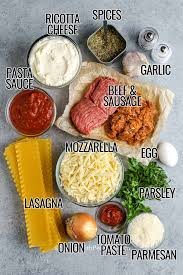
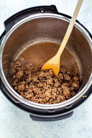
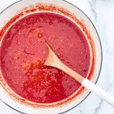
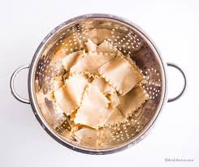
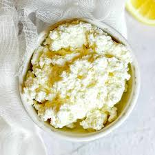
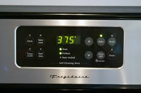
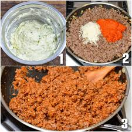
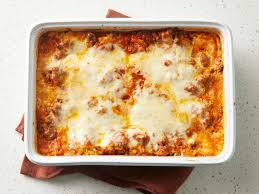
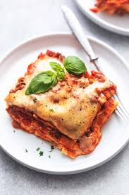

Lasagna, also known as lasagne (Italian: [lazaɲɲe]), is a type of pasta, possibly one of the oldest types,[2] made in very wide, flat sheets. In Italian cuisine it is made of stacked layers of pasta alternating with fillings such as ragù (ground meats and tomato sauce), béchamel sauce, vegetables, cheeses (which may include ricotta, mozzarella, and Parmesan), and seasonings and spices.[3] The dish may be topped with grated cheese, which melts during baking. Typically cooked pasta is assembled with the other ingredients and then baked in an oven (al forno). The resulting baked pasta is cut into single-serving square or rectangular portions.
In ancient Rome, there was a dish similar to a traditional lasagna called lasana or lasanum described in the book De re coquinaria by Marcus Gavius Apicius, but the word could have a more ancient origin. The first theory is that lasagna comes from Greek λάγανον (laganon), a flat sheet of pasta dough cut into strips. The word λαγάνα (lagana) is still used in Greek to mean a flat thin type of unleavened bread baked for the Clean Monday holiday.
Step 1
Gather ingredients
Step 2
Cook sausage, ground beef, onion, and garlic in a Dutch oven over medium heat until well browned.
Step 3
Stir in crushed tomatoes, tomato sauce, tomato paste, and water. Season with sugar, 2 tablespoons parsley, basil, 1 teaspoon salt, Italian seasoning, fennel seeds, and pepper. Simmer, covered, for about 1 ½ hours, stirring occasionally.
Step 4
Bring a large pot of lightly salted water to a boil. Cook lasagna noodles in boiling water for 8 to 10 minutes. Drain noodles, and rinse with cold water.
Step 5
In a mixing bowl, combine ricotta cheese with egg, remaining 2 tablespoons parsley, and 1/2 teaspoon salt.
Step 6
Preheat the oven to 375 degrees F (190 degrees C).
Step 7
To assemble, spread 1 ½ cups of meat sauce in the bottom of a 9x13-inch baking dish. Arrange 6 noodles lengthwise over meat sauce, overlapping slightly. Spread with 1/2 of the ricotta cheese mixture. Top with 1/3 of the mozzarella cheese slices. Spoon 1 ½ cups meat sauce over mozzarella, and sprinkle with 1/4 cup Parmesan cheese.
Step 8
Repeat layers, and top with remaining mozzarella and Parmesan cheese. Cover with foil: to prevent sticking, either spray foil with cooking spray or make sure the foil does not touch the cheese.
Final Step
Rest lasagna for 15 minutes before serving.
